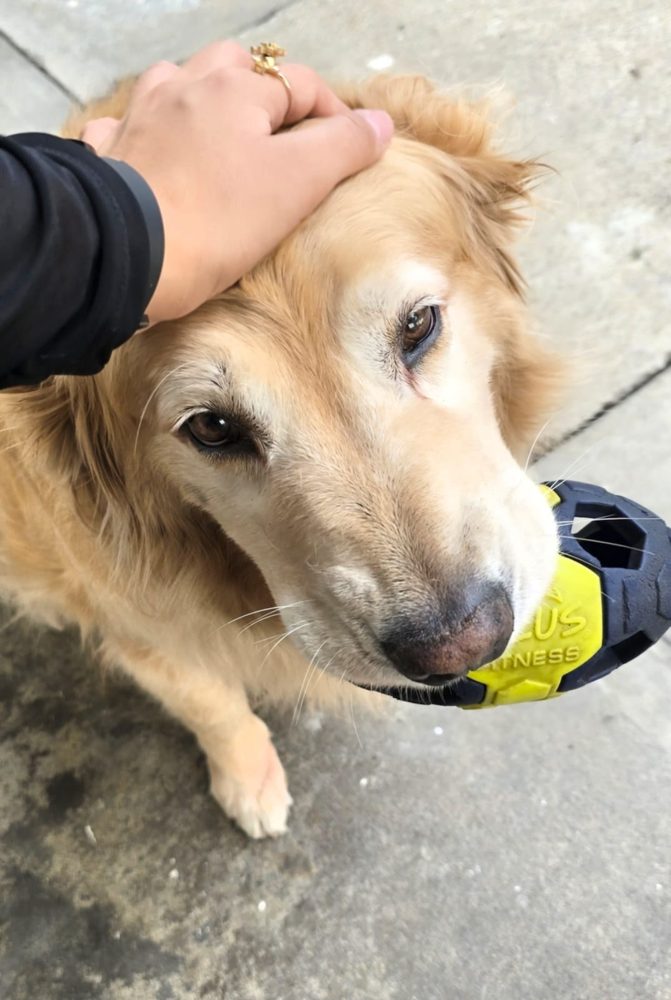

Vínculo Fortalecido
Ahora que está bien alimentada, la criatura se acerca a ti voluntariamente.
Acaricías sus escamas y descubres que son suaves y cálidas.
La criatura cierra sus ojos dorados y emite un gruñido melodioso.
Pequeñas chispas de luz comienzan a emanar de sus escamas. Es hermoso.